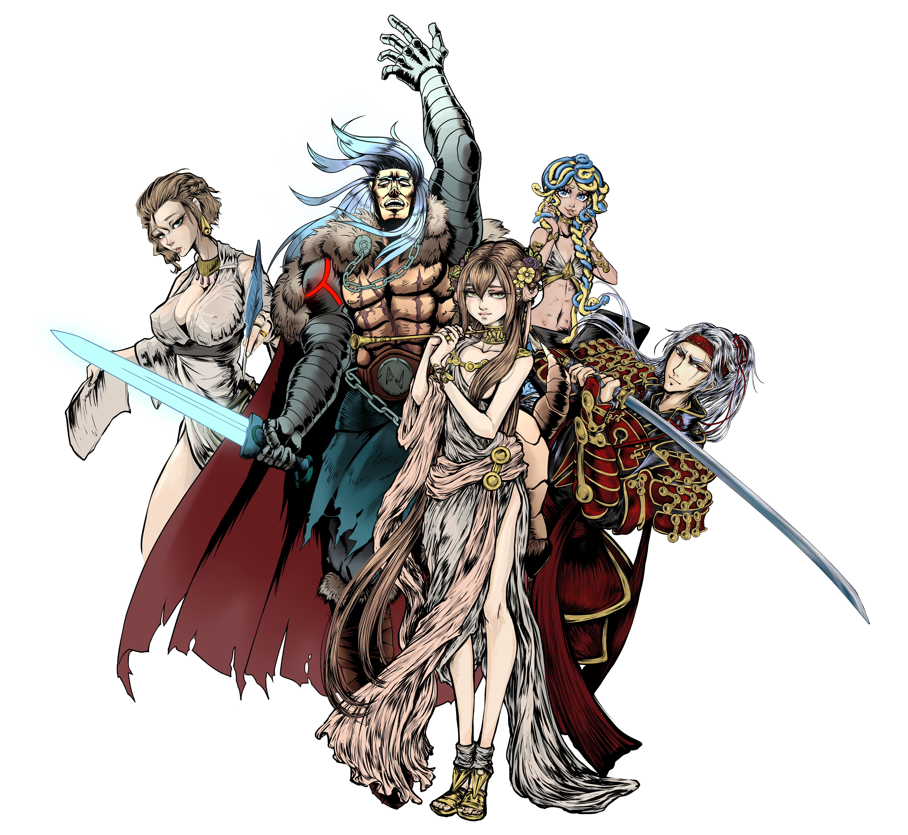
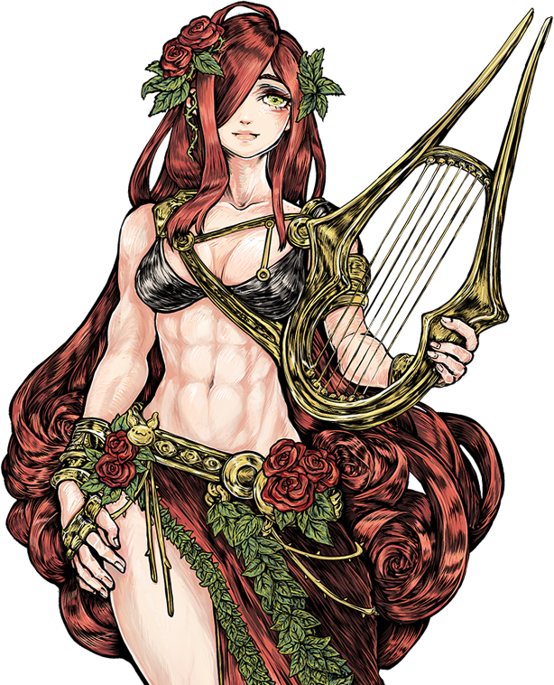
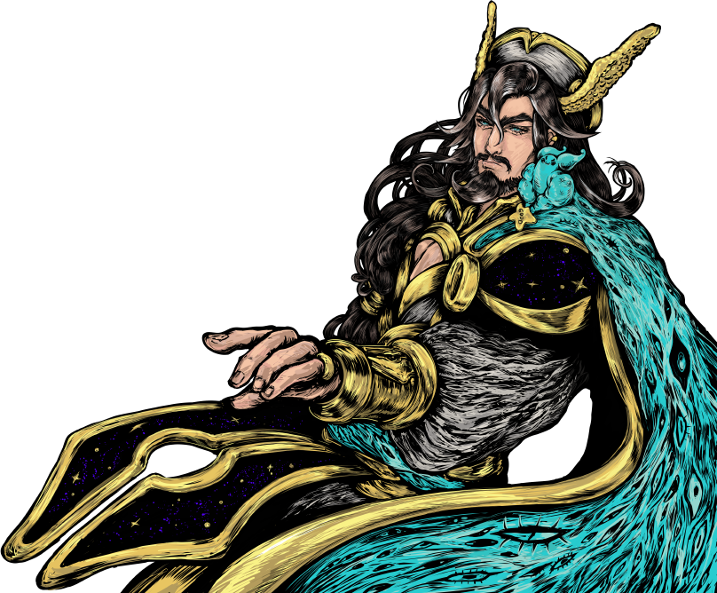
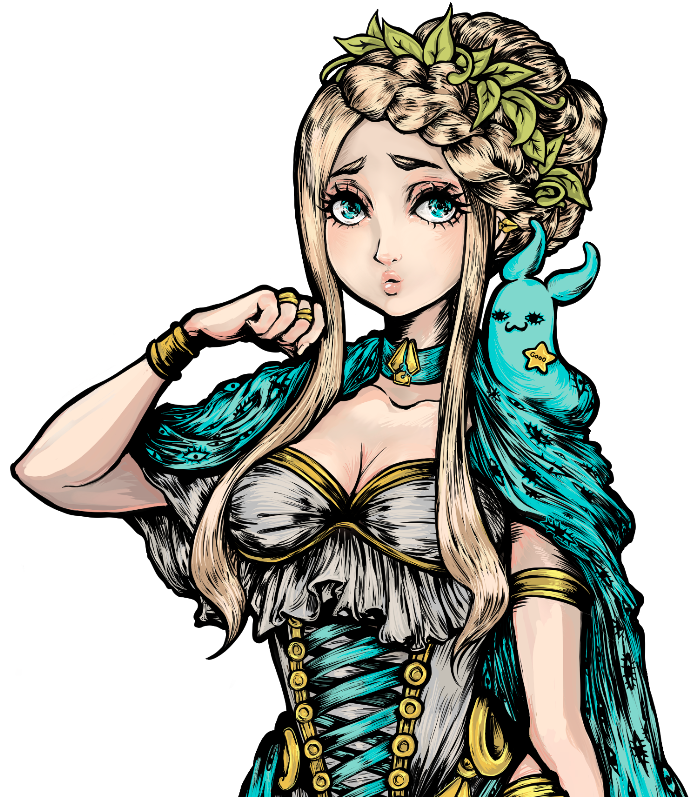
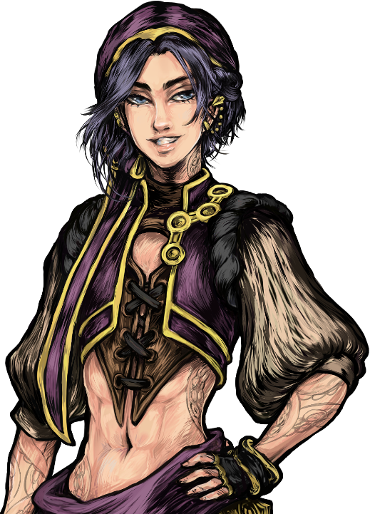
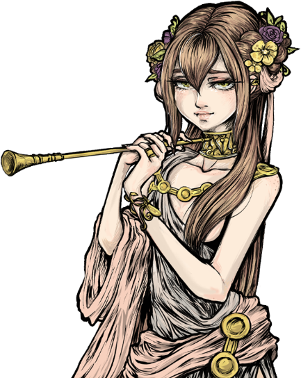
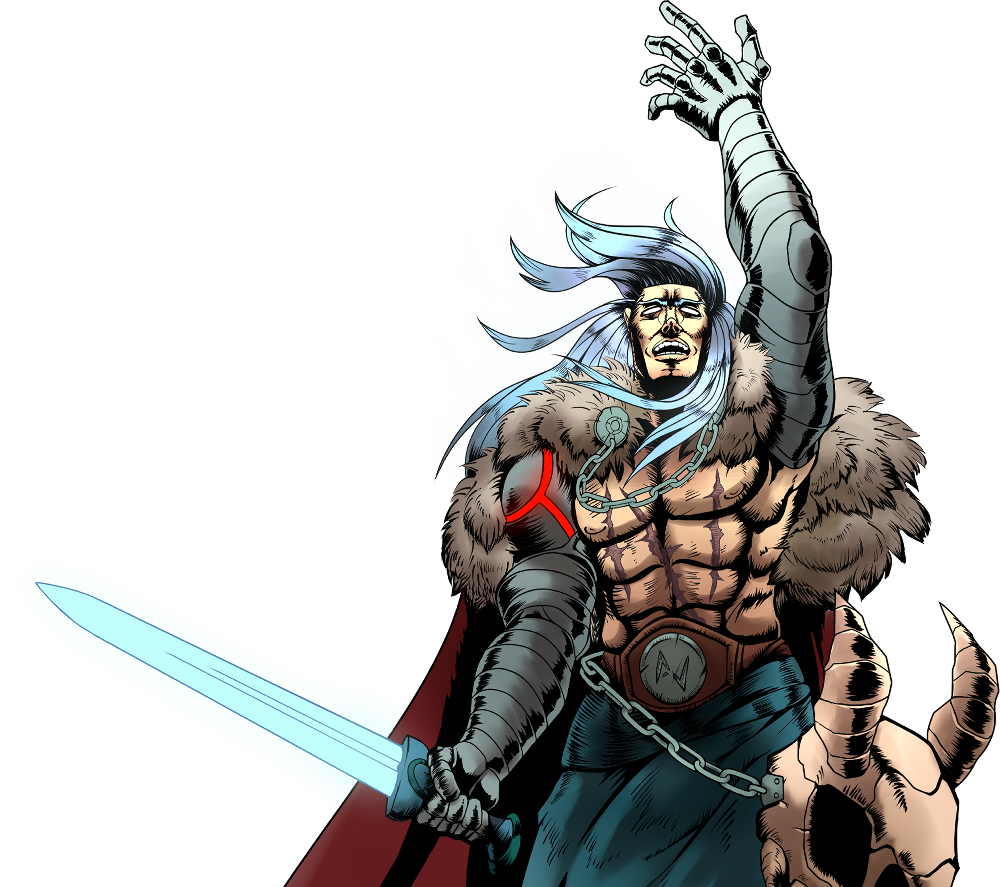
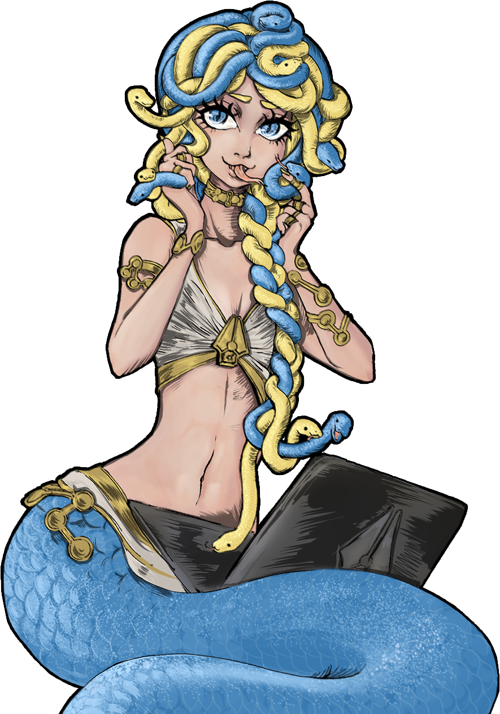

Models
Last contents updated 9/24/2024

2021년 6월 NovelAI의 출시 이후, 우리는 다양한 획기적인 스토리텔링 AI들을 출시했습니다. 각 모델은 신화 속 이름과, 이에 맞는 수제 삽화를 갖고 있습니다. 이 페이지에서는 그들의 스토리를 소개합니다.
Current
Erato

/ɛrˈato/
2024년 9월 23일 출시된 Erato는 Llama 3 70B Base model을 기초로, 수백억 개의 사전학습된 가장 고품질의, 그리고 업데이트된 자사의 Nerdstash 데이터셋으로 계속 학습을 거친 모델입니다. Kayra를 처음부터 사전학습하는데 들어간 것보다 더 많은 연산을 들어갔죠. 우리의 최신 스토리텔링 데이터셋으로 그녀를 파인튜닝했으며, 주어진 과제인 스토리텔링에 맞춰졌습니다. 초기에 우리는 자체적인 Nerdstash V2 토크나이저로 교체하는 실험을 했지만, 더 높은 압축비율을 제공하는 Llama 3 토크나이저를 결국 사용하기로 했습니다. 덕분에 더 많은 이야기를 컨텍스트에 넣을 수 있게 되었습니다.
Kayra

/kaɪrə/
자사가 자체 개발한 최신 모델 Kayra는 NovelAI의 모든 기능적 요구를 충족시키는 해답입니다. 130억 개의 패러미터와 약 1.6조 개의 토큰 데이터로 학습된 그는 다음의 모든 것을 할 수 있습니다: 고품질 storytelling, text adventure, instruct, prose augmentation, 그리고 아이템 목록이나 동영상 스크립트 같은 다양한 특수 케이스 처리 등. 또한, Kayra는 8192 토큰 컨텍스트 윈도우를 갖추고 있어 Clio를 연상시키는 기억 능력을 가지며, 이전 모델들보다 4배 높은 성능을 자랑합니다. Kayra는 2023년 7월 28일에 출시되었고, 2023년 8월 15일에 V1.1 업데이트가 이루어졌습니다. Kayra의 이름은 같은 이름을 한 튀르크 창조신에서 따왔으며, 그의 디자인 모티프에는 ‘Shoggy’라는 이름의 H100 GPU 클러스터를 기리기 위한 요소도 포함되어 있습니다.
Clio

/ˈklaɪoʊ/
Shoggy GPU 클러스터에서 훈련된, 자사 최초로 '처음부터 제작된' 모델인 Clio는 상대적으로 작은 모델에 놀랍도록 응축된 엄청난 양의 지삭과 성능을 보여줍니다. 훈련에 30억개의 패러미터와 약 1.6조개의 토큰으로 Clio는 사이즈의 부족을 속도로 충당합니다. Kayra처럼 그녀는 8192 토큰 컨텍스트 윈도우를 가질 뿐만 아니라, Special Modules를 통해 text adventure, instruct, and prose augmentation 기능에 접근할 수 있습니다. Clio는 2023년 5월 23일 출시되었습니다. Clio는 그리스 신화에 나오는 역사의 뮤즈를 따서 명명되었으며, 그녀는 우리의 H100 클러스터에서 훈련을 받았으므로 Kayra와 함께 Shoggy에서 영감을 얻은 디자인 핵심을 공유합니다.
Legacy
Krake

/kreɪk/
이전의 NovelAI 파인튜닝이 적용된 가장 큰 모델 중 하나였던 Krake는 EleutherAI의 Neo-X 20b 모델을 활용하여 독특한 감각으로 스토리텔링 경험을 만들어 냅니다. Krake는 다재다능한 모델이지만 느린 생성 속도, 2048 토큰 컨텍스트 윈도우, 모듈 V2와 호환이 되지 않는다는 몇가지 한계가 있습니다. 개인적 선호가 아니라면 현재 Krake를 추천하지 않습니다. Krake는 2022년 3월 11일 출시되었으며, 2022년 4월 29일 V2로 업데이트되었습니다. Krake의 이름과 디자인은 스칸디나비아 신화의 바다 괴수인 Kraken에서 영감을 얻었습니다.
Euterpe

/juːˈtɜːrpiː/
Fairseq 제품군의 13b 트랜스포머 모델을 기반으로 하는 Euterpe는 NovelAI 역사의 큰 도약을 상징합니다. 비록 지금 시점에서는 구식이지만, 모듈 V2와 Euterpe의 호환성, 인상적인 생성 속도, 2048 토큰 컨텍스트 윈도우, NovelAI 파인튜닝에 대한 강력한 고수adherence로 인해 그녀는 그 당시 주목을 받았습니다. 그녀는 그녀의 남매는 Sigurd와 함께 커스텀 모듈을 지원하는 두개의 모델 중 하나입니다. Euterpe는 2022년 1월 9일 실험적으로 출시되었으며, 11일에 V1이, 2월 6일에는 V2로 업데이트 되었습니다. Euterpe의 이름과 다지인은 그리스 신화에 나오는 음악의 뮤즈에서 유래했습니다.
Sigurd

/si:'gʊrd/
EleutherAI's GPT-J model에 NAI 파인튜닝을 사용하여 탄생한 Sigurd는 NovelAI의 두번째 모델이었습니다. 그럼에도 불구하고 그는 60억 개의 파라미터, 3억 개의 토큰 학습 시간, 2048 토큰의 컨텍스트 윈도우를 자랑하며, Modules V2와 Custom Modules를 지원합니다. 그리고 더 작은 모델 크기로 인해 매우 빠른 생성 속도를 제공합니다. Sigurd는 2021년 6월 16일 실험적으로 처음 출시되었으며, 6월 17일에 업데이트된 버전이, 6월 28일에 V3가, 11월 11일에 V4가 출시되었습니다. Sigurd의 이름과 디자인은 용 Fáfnir를 죽인 것으로 유명한 게르만 전설의 영웅에서 영감을 받았습니다. Sigurd의 그림은 Klein이 그렸으며, 모델 출시 직후 개최된 디자인 대회에서 선정되었습니다.
Genji
/gən'dʒiː/
Euterpe의 파생 파인튜닝 버전인 Genji는 일본어 텍스트에 능숙한 NovelAI 모델을 만들기 위한 초창기의 시도로 출시된 실험적인 모델이었습니다. Clio와 Keyra는 이제 Genji의 능력을 뛰어넘었기 때문에 일본어 생성을 위해 Genji를 사용하는 것은 더 이상 권장되지 않습니다. Genji는 2022년 11월 10일 출시되었으며, 2월 6일에 V2 업데이트가 있었습니다. Genji의 이름과 디자인은 헤이안 시대의 일본 소설인 겐지 이야기에게 대략적인 영감을 얻었습니다.
Snek

/snɛk/
Euterpe의 또 다른 파생 파인튜닝 버전인 Snek은 Python 코드 작성 전용 모델을 만들기 위한 일환으로 출시된 실험적인 모델이었습니다. 이 기능들은 현장에서 다른 모델들로 대체되었기 때문에 Python 코드를 생성하기 위해 Snek을 사용하는 것은 더 이상 권장되지 않습니다. Snek은 2022년 11월 10일 출시되었습니다. Snek의 이름과 디자인은 Python 프로그래밍 언어의 로고를 기반으로 만들어졌습니다.
Retired
Calliope
/kəˈlaɪ.əpi/
NovelAI의 첫번째 모델인 Calliope는 모든 것이 시작된 곳입니다. 재빠르고 민첩한 이 2.7억개의 매개변수를 가진 Calliope은 현재 우리가 즐기고 있는 많은 트윅과 추가 기능이 부족했고, 이후로 사용이 중지되었습니다. Calliope는 2021년 7월 16일, NovelAI와 함께 출시되었습니다. Calliope의 이름과 디자인은 그리스 신화에 나오는 웅변과 서사시의 뮤즈를 기반으로 합니다.
모델 리스트에서 더이상 선택은 할 수 없지만 여기의 블로그에서 GPL-2.0 license 라이센스 하에 그녀의 가중치가 공개되어 있습니다.